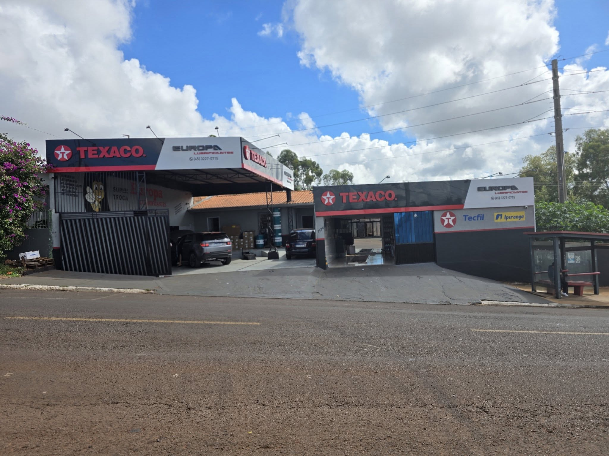
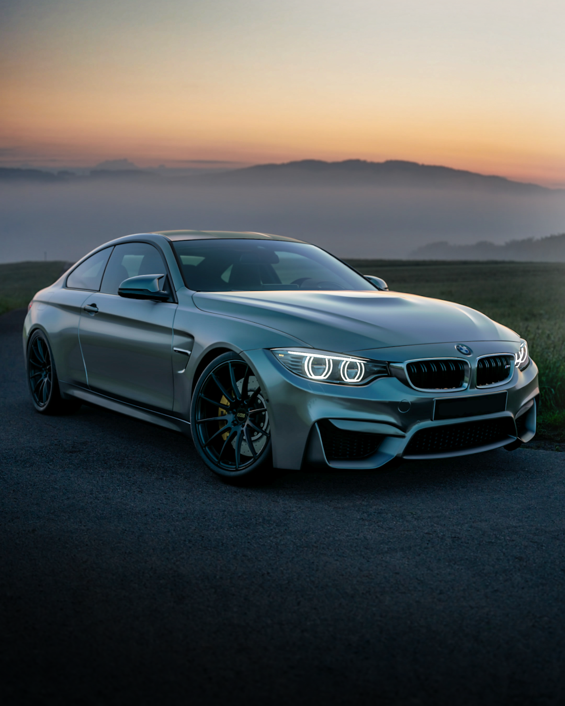

Informe seu veículo
Envie o modelo, ano e o que você precisa.

Lubrificantes, filtros e atendimento
próximo de você, em Cascavel.
Consulte nossa equipe sobre a aplicação e disponibilidade.
Consulte o óleo e o serviço adequados ao seu veículo.
Consultar ↗Filtros de óleo, ar, combustível e cabine.
Consultar ↗Óleos e produtos para os cuidados com seu motor.
Consultar ↗Consulte as opções e aplicações com nossa equipe.
Consultar ↗
Cuidados automotivos · imagem ilustrativaA Europa Lubrificantes está na Rua Europa, no bairro Periolo, em Cascavel. Um ponto de contato para quem procura lubrificantes, filtros e cuidados com o veículo.
Converse com a equipe, informe o modelo e o ano do seu veículo e consulte os produtos e serviços disponíveis.
Envie o modelo, ano e o que você precisa.
A equipe verifica os produtos e serviços.
Tire suas dúvidas e organize a sua visita.
Estamos na Rua Europa, 1126, em Cascavel. Venha nos visitar.
Envie uma mensagem com o modelo e o ano. Nossa equipe ajuda na consulta.
Conversar com a equipe ↗Consulte disponibilidade e atendimento.